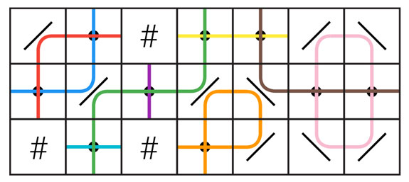

There are a lot of ways to solve the Small dataset. The most straightforward way is to use dynamic programming. Since the input contains no mirrors, each laser beam covers a set of non-wall cells that are either horizontally or vertically consecutive. Let us process the columns from left to right. For each row, we will keep track of its current status, which must be one of the following:
There are some ways to refine this to fewer combinations, but it's not necessary. Then, we can try all combinations of orientations for the beam shooters in the current column and see if that produces a valid status for the next column (there are more efficient ways to do this part, but this will do). This requires a bit of casework: for each row, we have to combine its incoming status with the current cell. The current cell can be one of five things: a covered or uncovered empty cell, a vertical or horizontal beam shooter, or a wall. Then, since there are 4 possible states for each row, the domain of our recursive function is of size 4R × C and the calculation of each value in that domain requires checking up to 2R combinations of beam shooters' orientations. Each such check requires a linear pass over the R cells, making the overall time complexity bounded by O(8R × C × R). It's not hard to come up with even smaller bounds, given that many combinations of statuses are actually impossible.
There is also a greedy Small solution that relies only on the absence of mirrors:
This works because if any cell remains uncovered after the first two steps, it can only be because there are exactly two remaining non-fixed beam shooters potentially pointing at it: one horizontally, and one vertically. If there had been two or more beam shooters pointing at it in the same direction, we would have already fixed all of them in step 1; if there had been only one beam shooter in total, we would have fixed it in step 2. Then, choosing the same direction for all beam shooters ensures that for all those cells, (exactly) one of the beam shooters is pointed in the correct direction to cover that cell.
The second solution presented above for the Small dataset hints at a possible generalization that solves the Large dataset.
In the Small, each cell is at an intersection of a horizontal line of consecutive non-wall cells, and a vertical line of consecutive non-wall cells. These lines of cells run between walls, between opposite grid boundaries, or between one wall and one grid boundary. Each of these lines of cells is characterized by having either no beam shooter (which forces each cell to be covered from the other direction in step 2), one beam shooter (which leaves the cell on hold until step 3), or more than one (which forces all beam shooters on the line to point in the direction opposite to the line of cells in step 1). In the Large, something similar happens, but instead of simple lines of cells, we have the more complicated notion of paths. A path is a set of pairs (c, d) where c is any cell that is empty or contains a beam shooter and d is either horizontal or vertical. A pair (c, d) and a different pair (c', d') are part of the same path if and only if a beam shooter placed on cell c and pointing in direction d would produce a beam that, ignoring all other beam shooters, would pass through cell c' in direction d'. As an example, the following picture illustrates a grid with 9 paths.
Notice that the red and blue paths pass through the same set of empty cells, although the (cell, direction) pairs that make up those paths are different. Also notice there is an orange path that passes through the same cell twice; that is, the path contains the pair (c, horizontal) and the pair (c, vertical) where c is the rightmost empty cell in the bottom row. Also notice how some paths may contain a single pair, like the turquoise, purple, and brown paths in the picture. Finally, some paths loop onto themselves, like the pink path in the picture, while other paths start and end at a wall or grid boundary. We call the former loop paths.
Paths that go through a number of beam shooters other than one have similar immediate consequences to lines of consecutive non-wall cells in the Small dataset. For convenience, let us define the opposite function o given by o(horizontal) = vertical and o(vertical) = horizontal.
If a beam shooter is required to be fixed in two different directions, by the same or different steps, the case is impossible. This is the generalization of steps 1 and 2 in the Small greedy solution. After applying these, some cells may be left uncovered. As before, those cells are always in the intersection of two different paths, and those paths contain a single pair where the cell contains a beam shooter each. Unfortunately, the way to set the remaining beam shooters so that every cell is covered is not as simple as step 3 for the Small. This might start to look like a (non-bipartite) matching problem, but it is not one!
In the Small, after all the cases that directly fixed the direction of some beam shooter, each empty cell that remained uncovered could possibly be covered by two beam shooters, one on each direction. The same is true in this case: for each empty cell c that remains uncovered there are two different paths that contain the pairs (c, horizontal) and (c, vertical), and each of them passes through exactly one pair that contains a non-yet fixed beam shooter. Say those two pairs containing shooters are (s1, d1) and (s2, d2). Then, covering cell c requires us to either set s1 in direction d1 or s2 in direction d2, or both. If it happens to be s1 = s2, then it must be d1 ≠ d2, and the requirement is fullfilled by any assignment.
If we assign logical variables to the shooters with the logical values true and false corresponding to the two directions, each of these restrictions is a disjunction of two literals. Making all such disjunctions simulatenously true is, then, making their conjunction true. Finding a truth assignment to variables to make a conjunction of disjunctions of up to two literals each true is a problem known as the 2-satisfiability problem or 2SAT. We can use known 2SAT algorithms to solve that problem and get an assignment for the variables, and then translate that assignment back into an assignment of directions for the beam shooters.
The greedy Small-only solution we presented is even simpler to prove correct under this logic model: without mirrors, every disjunction has exactly one literal negated (because the cell requirement is for one beam shooter to be horizontal and/or some other beam shooter to be vertical), so assigning all variables a true value makes all disjunctions true thanks to the non-negated literal, and also assigning them all a false value makes all disjunctions true thanks to the negated literal.
This analysis is written in the order in which one might reason this problem step by step, without any huge leap at any single step. However, for some people it might be faster to have an aha moment and notice that each cell yields a requirement on up to two beam shooters directly: cells without shooters imply a requirement on up to two shooters, one of each direction, to be true. If there is only one of those, that can be encoded as a single-literal disjunction, or made it a two-literal disjunction by simply taking literal L and writing (L ∨ L). Then, beam shooters that possibly point at another beam shooter yield another single-literal disjunction forcing them to point the other way. This makes the first pass unnecessary and encodes all requirements into the 2SAT instance, making the solution more concise.
This problem lends itself to many greedy heuristics plus some kind of bruteforce or backtracking. Notice that 2SAT itself can be solved in polynomial time by some backtrackings and by a graph-theoretical algorithm that has many greedy decisions underneath (both approaches are mentioned in the Wikipedia article). So, many algorithms that don't explicitly use an algorithm for the 2SAT problem are actually correct because they are basically doing the same thing without going through the modeling.